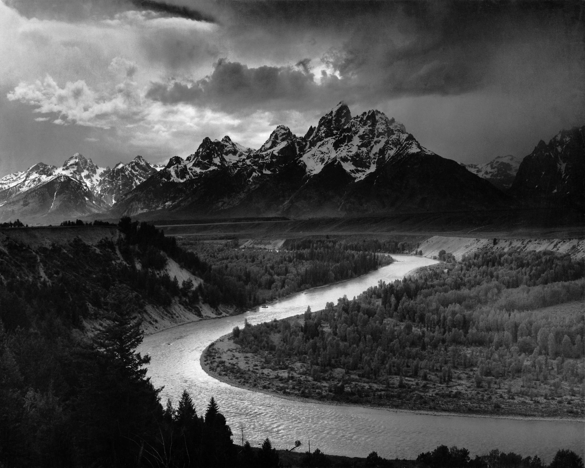

蛇河从左下接住视线，穿过中央亮部，再在山脚前消失。近景暗林、中景河谷、远景雪峰，把“远”拆成三个可感知的尺度。
黑白不是无色：深黑承担重量，中灰制造纵深，银白只点亮水、雪与云缘。明度对比让河面无需最白，也能显得发光。
深景深、密集细节与受控透视，显出大画幅风景摄影的工作方式。Adams 与 Fred Archer 约在 1940 年共同发展区域曝光法：先预想明度，再让负片与相纸实现它。
档案事实：1941 年国家公园管理局委托 Adams 创作自然主题壁画系列；项目因二战中止。本作摄于 1942 年，后来进入美国国家档案馆。
我的判断：眼睛走完了旅程，身体仍在原地。这是崇高感最安静的版本。
作品：Ansel Adams，The Tetons and the Snake River，1942。美国国家档案馆，NAID 519904 / 79-AAG-1。图像：Wikimedia Commons，来源页标注在美国为公有领域的美国联邦政府作品；其他地区与用途请核对来源页。版权归原作者及相关权利人。赏析为“每日艺术”原创分析。